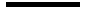
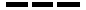

Escenario: La empresa Adita S.A. con la matriz en Guayaquil, sucursales en Cuenca, Quito y Galápagos tiene el diagrama de red mostrado en la Figura 1. Se han presentado problemas de conectividad entre las sucursales, para identificarlos se usa el modelo de redes de datos OSI.
| Tipos de conexiones | ||
|---|---|---|
| Conexión directa | Equipos diferentes. Por ejemplo: Switch -> PC Switch -> Router |
 |
| Conexión cruzada | Equipos de igual naturaleza. Por ejemplo: PC-Router |
 |
| WAN | Para redes separadas por grandes distancias |
| N°. | Subred | Cálculos |
|---|---|---|
| 1 | 192.168.1.0/24 | Saltos de 20=1 en el tercer octeto |
| 2 | 192.168.2.0/30 | Saltos de 22=4 en el cuarto octeto |
| 3 | 192.168.2.4/30 | Saltos de 22=4 en el cuarto octeto |
| 4 | 192.168.2.8/30 | Saltos de 22=4 en el cuarto octeto |
| 5 | 192.168.2.12/30 | Saltos de 22=4 en el cuarto octeto |
| 6 | 192.168.2.16/30 | Saltos de 22=4 en el cuarto octeto |
| 7 | 192.168.2.20/30 | Saltos de 22=4 en el cuarto octeto |
| 8 | 192.168.2.36/30 | Aquí existe un espacio libre entre las subredes 11000000.10101000.00000010.00100100 <- IP de Subred 8 AND 11111111.11111111.11111111.11110000 <- Máscara en binario 11000000.10101000.00000010.00100000 <- IP de Subred 8 corregida Subred 8 corregida -> 192.168.2.32/28 Saltos de 24=16 en el cuarto octeto la siguiente subred sería 192.168.2.48 Se realiza la operación AND para obtener la Subred correcta |
| 7 | 192.168.2.100/30 | 11000000.10101000.00000010.01100100 <- IP de
Subred 9 AND 11111111.11111111.11111111.11000000 <- Máscara en binario 11000000.10101000.00000010.01000000 <- IP de Subred 9 corregida Subred 9 corregida -> 192.168.2.64/26 |
| Dispositivos | IP del dispositivo | Subred | Rango | Observaciones |
|---|---|---|---|---|
| PC0 | 192.168.1.120 | Subred 1 | 192.168.1.1-192.168.1.254 | Es correcta |
| PC1 | 192.168.2.98 | Subred 7 | 192.168.2.21-192.168.2.22 | No es válida |
| PC2 | 192.168.2.90 | Subred 9 | 192.168.2.65-192.168.2.126 | Es válida |
| PC3 | 192.168.2.98 | Subred 8 | 192.168.2.33-192.168.2.46 | No es válida |
Conclusión: El diagrama presenta 11 errores en total, siendo 7 errores de la capa física, y 4 errores de la capa de red asociadas al direccionamiento de red.